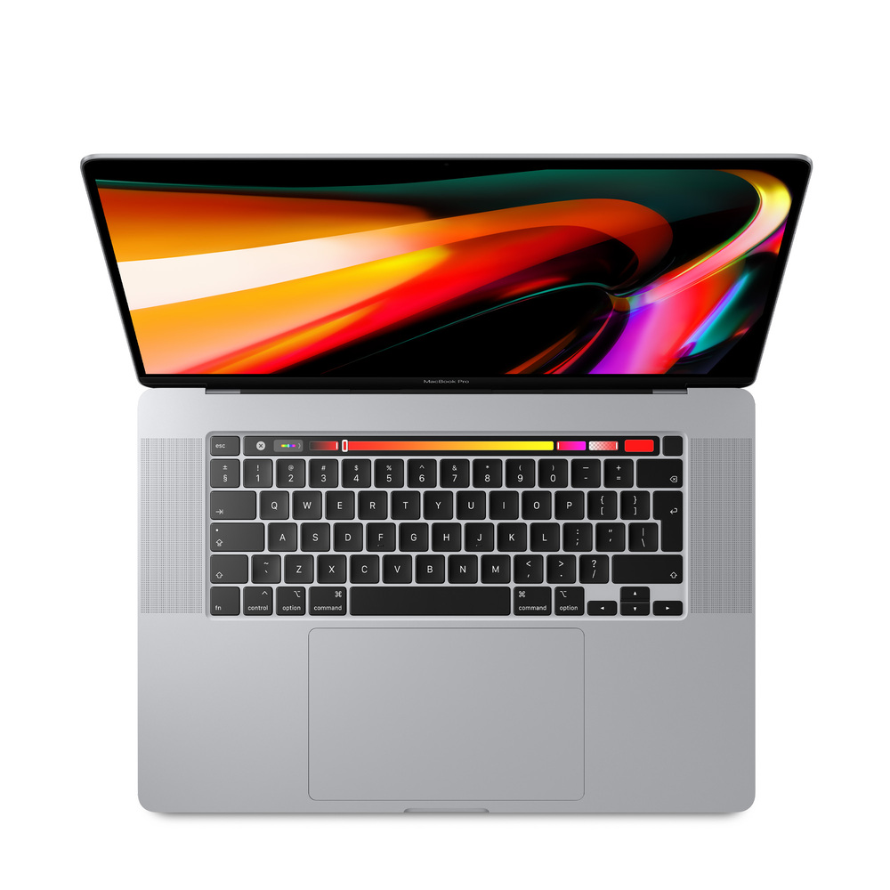
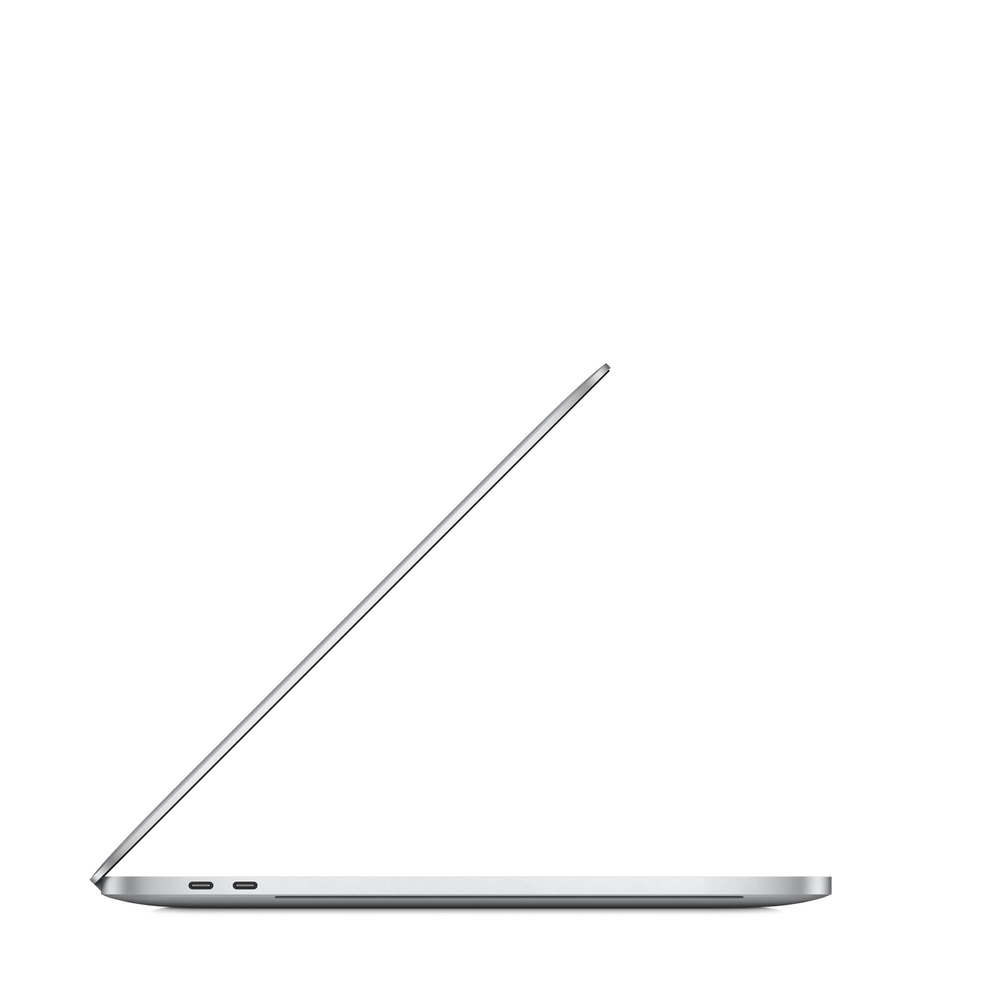

MacBookPro MacBook Pro 16" 2.3GHz/16GB
Artık daha iyi çözünürlük sunan ve milyonlarca rengi destekleyen 16 inç Retina ekranı
sayesinde MacBook Pro ile daha güzel görüntüler elde edebilirsiniz.
6 veya 8 çekirdekli işlemcilerin ve 8 GB'a kadar GDDR6 belleğe sahip AMD Radeon Pro 5000M serisi
grafik işlemcisinin tüm gücünden yararlanın ve optimize edilmiş bir termal mimariyle benzersiz
performansı deneyimleyin.

MacBookPro
Bu MacBook Pro, 64 GB'a kadar yapılandırılabilen 2666 MHz belleğe ve 8 TB'a kadar depolama alanına, Touch ID, Touch Bar ve bir günlük pil ömrüne sahiptir. Performansa öncelik veren profesyoneller için tasarlanmış olup, bunu her yerde yapmanızı sağlar.

MacBookPro
• 9. nesil 8 çekirdekli Intel Core i9 işlemci
• Çarpıcı 16 inç (40,65 cm diyagonal) True Tone teknolojisine sahip Retina ekran
• Touch Bar ve Touch ID
• GDDR6 belleğe sahip AMD Radeon Pro 5500M
• Ultra hızlı SSD depolama
• IntelUHDGraphics630
• Woofer'ları zorlamayı engelleyen altı hoparlör sistemi
• Dört Thunderbolt 3 (USB C) bağlantı noktası
• 11 saate kadar pil ömrü
• Wi-Fi802.11ac
• Arkadan Aydınlatmalı Sihirli Klavye
• Force Touch izleme dörtgeni
• Uzay grisi veya gümüş renk seçenekleri
• En son macOS sürümü